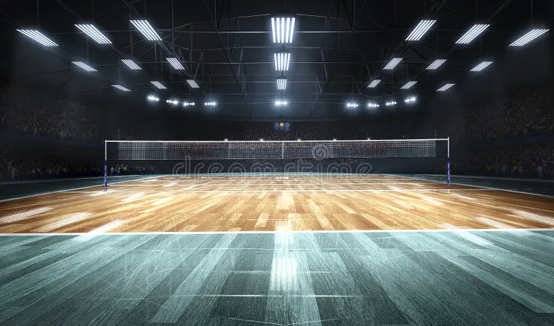
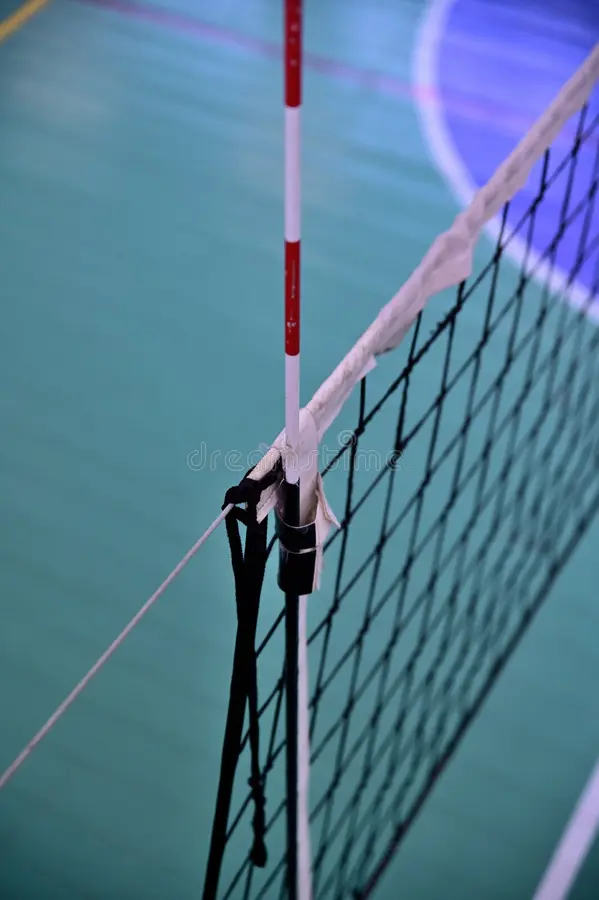
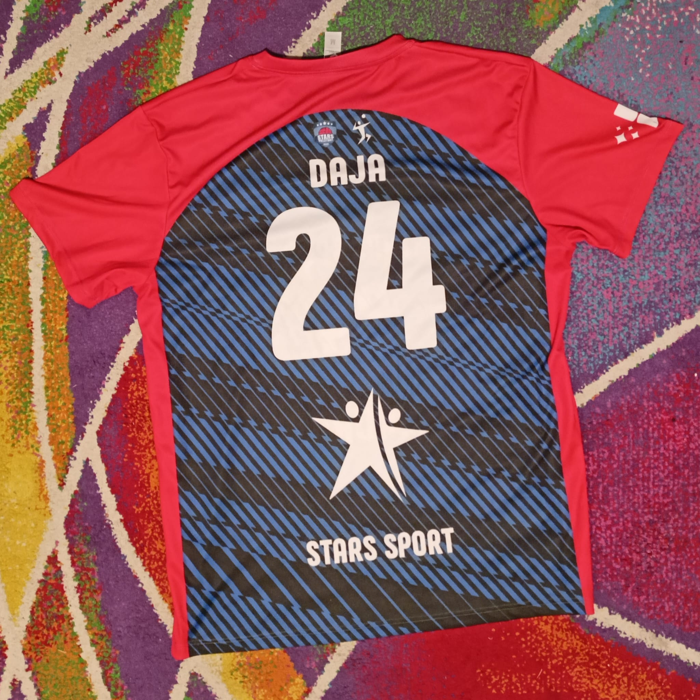

Cancha:
La superficie de juego, generalmente hecha de madera o una superficie sintética.Las dimensiones son de 18 m x 9 m.

Balón:
Hecho de cuero o material sintético, con un peso de 260-280 gramos.
Red:
Colocada a una altura de 2.43 metros para hombres y 2.24 metros para mujeres.
Antenas:
Barras flexibles que se colocan en los extremos superiores de la red.
Rodilleras:
Para proteger las rodillas durante las caídas y movimientos bruscos.
Manguitos:
Para proteger los antebrazos y mejorar el agarre al recibir el balón.
Zapatillas:
Especialmente diseñadas para el voleibol, con buen soporte y agarre.
Equipación:
Camiseta y pantalones del club.